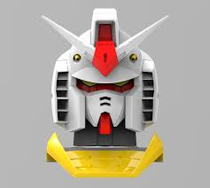
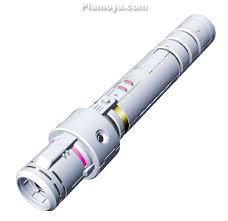
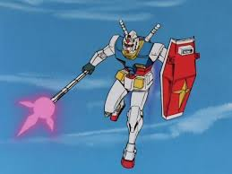
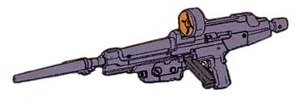
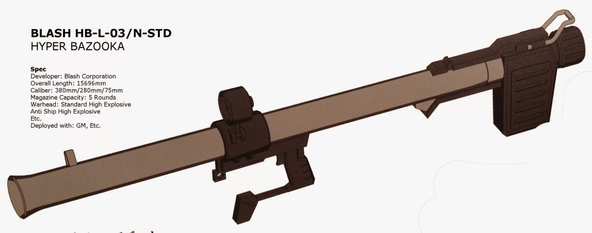
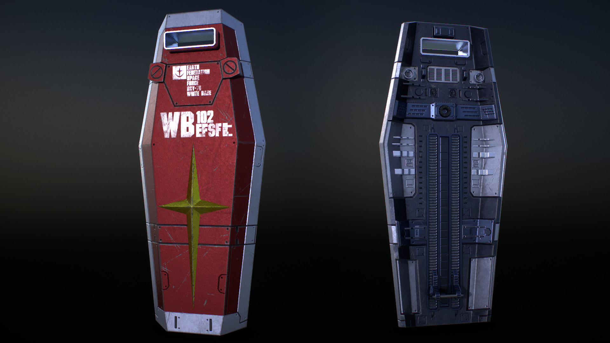

WELCOME TO GUNDAM

The Gundam was incredibly advanced for its time. Built from lightweight Luna Titanium Alloy, its frame was both lighter than that of Zeon's mass-produced mobile suits and much sturdier,able to shrug off a MS-06 Zaku II's machine gun fire with little to no damage. Its offensive power was above and beyond that of the Zakus. The Gundam would engage in most battles with its beam rifle, making it the first mobile suit to have firepower equivalent to a battleship's beam cannons. In addition, it made use of two beam sabers, blades of extremely hot plasma which could cut through any metal with ease
Those beam sabers could be extended into a spear-like beam javelin, which could be used to stab into an enemy from a longer distance. The Gundam also used more conventional weaponry; it could launch rockets with a "Hyper Bazooka," the Federation's answer to the bazookas used by Zeon's Zakus; in addition, its head was outfitted with a pair of small vulcan guns, as a way of attacking light-armored aircraft and vehicles without wasting ammo or energy from its more powerful armaments. It also made use of a very unconventional close-range weapon known as the "Gundam Hammer" - a large weapon similar to a flail which could be swung at enemies to deal crushing damage.
The Gundam Hammer was eventually upgraded for use in space and outfitted with a number of verniers on the ball, and renamed to be the "Hyper Hammer". Lastly, it wielded a shield which would offer it a defense against enemy attacks that not even its Luna Titanium body could withstand without damage. Gundam pilot, Amuro Ray, would make use of the shield as a decoy in many battles, taking advantage of its size to fool the enemy into thinking he was charging at them, then attacking the enemy through the shield.
Those beam sabers could be extended into a spear-like beam javelin, which could be used to stab into an enemy from a longer distance. The Gundam also used more conventional weaponry; it could launch rockets with a "Hyper Bazooka," the Federation's answer to the bazookas used by Zeon's Zakus; in addition, its head was outfitted with a pair of small vulcan guns, as a way of attacking light-armored aircraft and vehicles without wasting ammo or energy from its more powerful armaments. It also made use of a very unconventional close-range weapon known as the "Gundam Hammer" - a large weapon similar to a flail which could be swung at enemies to deal crushing damage.
The Gundam Hammer was eventually upgraded for use in space and outfitted with a number of verniers on the ball, and renamed to be the "Hyper Hammer". Lastly, it wielded a shield which would offer it a defense against enemy attacks that not even its Luna Titanium body could withstand without damage. Gundam pilot, Amuro Ray, would make use of the shield as a decoy in many battles, taking advantage of its size to fool the enemy into thinking he was charging at them, then attacking the enemy through the shield.
Classification: Prototype Close Quarters Combat Mobile Suit
Model Number: RX-78-2 Official Name: Gundam
Head Height: 18.0 m Overall Height: 18.5 m Base Weight: 43.4 t Full Weight: 60.0
Power Source: Minovsky Ultracompact Fusion Reactor Generator Output: 1380 kW Armor Material: Luna Titanium
Total Thrust: 2 × 24000 kg 4 × 1870 kg Maximum Acceleration: 0.93 G Maximum Speed: 165 km/h
180° Attitude Change Time: 1.5 s 1.1 s (after magnetic coating upgrade) Effective Sensor Radius: 5700 m
Head Height: 18.0 m Overall Height: 18.5 m Base Weight: 43.4 t Full Weight: 60.0
Power Source: Minovsky Ultracompact Fusion Reactor Generator Output: 1380 kW Armor Material: Luna Titanium
Total Thrust: 2 × 24000 kg 4 × 1870 kg Maximum Acceleration: 0.93 G Maximum Speed: 165 km/h
180° Attitude Change Time: 1.5 s 1.1 s (after magnetic coating upgrade) Effective Sensor Radius: 5700 m
60mm Vulcan Gun
Mounted in the head, the pair of Vulcan guns were 60mm Gatling Guns and have a high rate of fire. Primarily used to ward off advancing enemies, shoot down missiles or other lightly armoured targets, they also made good use as an anti-aircraft and anti-personnel weapons. The Vulcan guns however had a hard time piercing heavy armor (though they had shown the ability to do severe damage to Mobile Suit's if fired at point-blank range) and thus were not often used against larger, more heavily armored foes.
Beam Saber
The Gundam was the first mobile suit to ever use a beam weapon made for melee combat, and two beam sabers are stored on the backpack. The beam sabers use Minovsky particles held in place by an I-Field to form an effective cutting surface that can slice through nearly any material. The particles for the beam sabers are stored in the E-cap within the hilt of the saber, which is recharged from the Gundam's reactor when the saber is returned to its backpack storage rack. Once activated, beam sabers do not rely on the mobile suit's reactor and can be thrown or discarded as decoys. One can be used as a reserve weapon, or both can be used simultaneously in a twin sword fashion. The beam saber can also transform into the Beam Javelin.
Beam Javelin
The beam javelin is an alternate form of the beam saber, with an extended handle and a three pronged beam at the end. The long reach of the weapon gives the RX-78-2 an advantage in close quarters combat. Gundam Hammer/Hyper Hammer The Gundam Hammer is essentially a large spiked ball attached to a chain, and provides the Gundam with a ranged melee weapon. The Gundam could either throw or swing the Hammer around itself in order to impact and damage its target through the sheer mass of the hammer. Later, it was upgraded into the Hyper Hammer and had several rockets mounted into the ball in order to allow it to maneuver more effectively in space as well as the ability to change its direction before impact, and to increase the damage it could cause.
BAUVA*XBR-M-79-07G Beam Rifle
A revolutionary weapon for its time, the beam rifle is the primary weapon used by the Gundam. Making use of the Federations E-cap (or "energy capacitor") technology, the rifle uses charged concentrations of Minovsky particles as ammunition. This gives the beam rifle firepower equivalent to that of a battleship's beam cannons. As the Minovsky particles destroy matter on a molecular scale, the beam rifle can penetrate even the thickest armor and destroy its target with a single shot. One weak point of the rifle was its energy limits. The rifle could only be fired 16 times before depleting its energy and becoming useless. When not in use, the beam rifle can be stored on the back skirt armor.
BLASH*XHB-L-03/N-STD Hyper Bazooka
Technically a large rocket launcher, it could fire several 380mm missiles to attack targets at long range. No mass-production MS's armor is able to stop this weapon. While very powerful, it has a slow rate of fire and a fairly little amount of ammunition. Most often used to take out slow, heavily armored targets.
RX*M-Sh-008/S-01025 Shield
Hand-carried, forearm-mounted or stored on the Gundam's backpack, the shield is a simple defense used to block most physical and beam attacks. Also used to great effect in close quarters battle with enemy mobile suits. Has a view port than can be sealed off with an internal blast plate. The shield is also used to deflect heat away from the mobile suit when undergoing atmospheric re-entry.






Mounted in the head, the pair of Vulcan guns were 60mm Gatling Guns and have a high rate of fire. Primarily used to ward off advancing enemies, shoot down missiles or other lightly armoured targets, they also made good use as an anti-aircraft and anti-personnel weapons. The Vulcan guns however had a hard time piercing heavy armor (though they had shown the ability to do severe damage to Mobile Suit's if fired at point-blank range) and thus were not often used against larger, more heavily armored foes.
Beam Saber
The Gundam was the first mobile suit to ever use a beam weapon made for melee combat, and two beam sabers are stored on the backpack. The beam sabers use Minovsky particles held in place by an I-Field to form an effective cutting surface that can slice through nearly any material. The particles for the beam sabers are stored in the E-cap within the hilt of the saber, which is recharged from the Gundam's reactor when the saber is returned to its backpack storage rack. Once activated, beam sabers do not rely on the mobile suit's reactor and can be thrown or discarded as decoys. One can be used as a reserve weapon, or both can be used simultaneously in a twin sword fashion. The beam saber can also transform into the Beam Javelin.
Beam Javelin
The beam javelin is an alternate form of the beam saber, with an extended handle and a three pronged beam at the end. The long reach of the weapon gives the RX-78-2 an advantage in close quarters combat. Gundam Hammer/Hyper Hammer The Gundam Hammer is essentially a large spiked ball attached to a chain, and provides the Gundam with a ranged melee weapon. The Gundam could either throw or swing the Hammer around itself in order to impact and damage its target through the sheer mass of the hammer. Later, it was upgraded into the Hyper Hammer and had several rockets mounted into the ball in order to allow it to maneuver more effectively in space as well as the ability to change its direction before impact, and to increase the damage it could cause.
BAUVA*XBR-M-79-07G Beam Rifle
A revolutionary weapon for its time, the beam rifle is the primary weapon used by the Gundam. Making use of the Federations E-cap (or "energy capacitor") technology, the rifle uses charged concentrations of Minovsky particles as ammunition. This gives the beam rifle firepower equivalent to that of a battleship's beam cannons. As the Minovsky particles destroy matter on a molecular scale, the beam rifle can penetrate even the thickest armor and destroy its target with a single shot. One weak point of the rifle was its energy limits. The rifle could only be fired 16 times before depleting its energy and becoming useless. When not in use, the beam rifle can be stored on the back skirt armor.
BLASH*XHB-L-03/N-STD Hyper Bazooka
Technically a large rocket launcher, it could fire several 380mm missiles to attack targets at long range. No mass-production MS's armor is able to stop this weapon. While very powerful, it has a slow rate of fire and a fairly little amount of ammunition. Most often used to take out slow, heavily armored targets.
RX*M-Sh-008/S-01025 Shield
Hand-carried, forearm-mounted or stored on the Gundam's backpack, the shield is a simple defense used to block most physical and beam attacks. Also used to great effect in close quarters battle with enemy mobile suits. Has a view port than can be sealed off with an internal blast plate. The shield is also used to deflect heat away from the mobile suit when undergoing atmospheric re-entry.
Made by Fluke #5